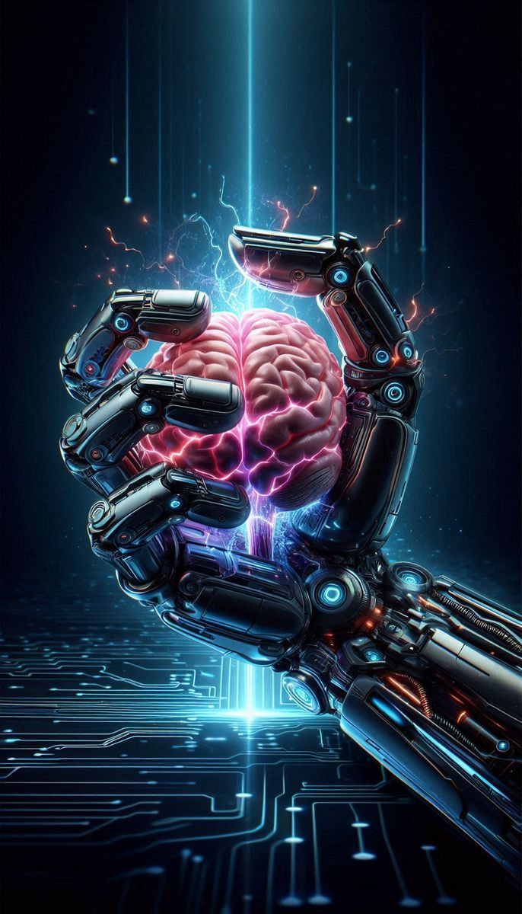
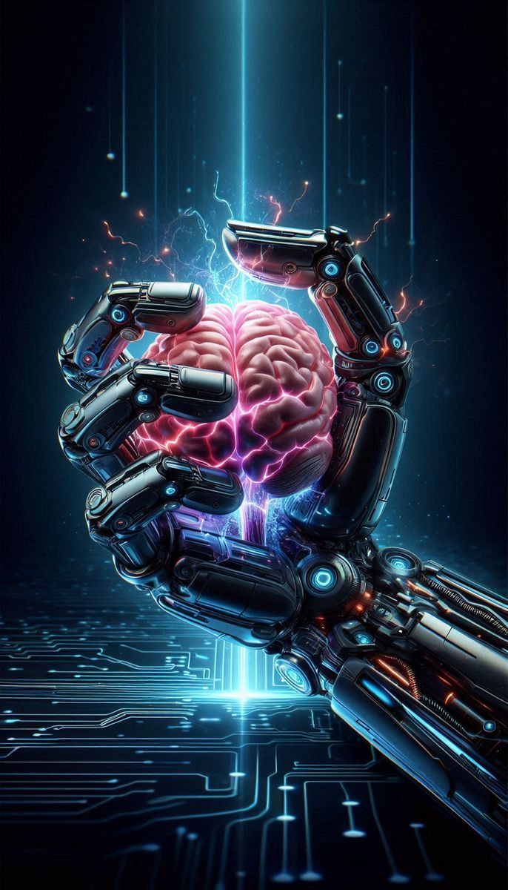

Above Are The Virtual Art Created On Some Themes
Theme: Cyberpunk Survival in a Digital Rain
This artwork portrays a futuristic cyberpunk warrior standing under neon-lit rain. The central figure wears glowing red visor goggles, reflecting the chaos of a digital cityscape. The hood and tactical gear suggest resilience in a dystopian environment where technology and survival are intertwined. The rain, combined with luminous city lights, blurs the boundary between human and machine, reality and simulation. The visor becomes both a shield and a gateway to an augmented reality, symbolizing how humans adapt to a world dominated by data, surveillance, and conflict. It captures the essence of strength, anonymity, and survival in a cybernetic era.
Theme: Beyond the Horizon – A Journey into Tomorrow
This artwork captures a breathtaking vision of humanity’s future in space. A lone figure stands at the edge of a walkway, gazing at a luminous metropolis glowing in neon hues beneath an enormous celestial body. Towering spires pierce the sky, channeling beams of light into the cosmos, symbolizing progress, ambition, and the quest for knowledge. The mirrored reflection on the water suggests both reality and dream, blurring the boundary between imagination and existence. Surrounding planets emphasize our place in a vast universe, hinting at exploration and unity. It’s a stunning representation of wonder, destiny, and the endless possibilities of tomorrow.
Theme: Virtual Reality – The Next Frontier of Existence
This artwork immerses us in the limitless world of virtual reality, where imagination shapes reality itself. A person wearing a VR headset stands at the center, surrounded by glowing digital constructs, galaxies, and futuristic landscapes. The energy sphere between their hands symbolizes creation, control, and the merging of human consciousness with digital universes. The red grid beneath contrasts with the infinite blue cosmos above, portraying the bridge between physical and virtual realms. This piece highlights VR as not just a tool for gaming but a gateway to new dimensions, where technology transforms human experience into boundless exploration.
Theme: The Symbiosis of Mind and Machine
This artwork can also be seen as a representation of humanity’s consciousness extending into technology. The glowing energy sphere symbolizes the human brain, now projected and amplified through a robotic or digital interface. The VR headset and outstretched hands signify how machines act as extensions of thought, transforming abstract ideas into tangible virtual realities. The robotic arm powered by a human mind suggests a future where intelligence and creativity are not limited by biology but enhanced by technology. It captures the essence of human evolution—melding organic thought with artificial power to shape new worlds.
TO KNOW MORE ABOUT VIRTUAL ART CLICK HERE
Futuristic & Virtual Artworks
| Image | Title | Theme |
|---|---|---|
| Image 1 | Cyberpunk Warrior | Cyberpunk Survival in a Digital Rain |
| Image 2 | Futuristic Skyline | Beyond the Horizon – A Journey into Tomorrow |
| Image 3 | Virtual Reality Explorer | Virtual Reality – The Next Frontier of Existence |
| Image 4 | Mind-Machine Symbiosis | The Symbiosis of Mind and Machine |